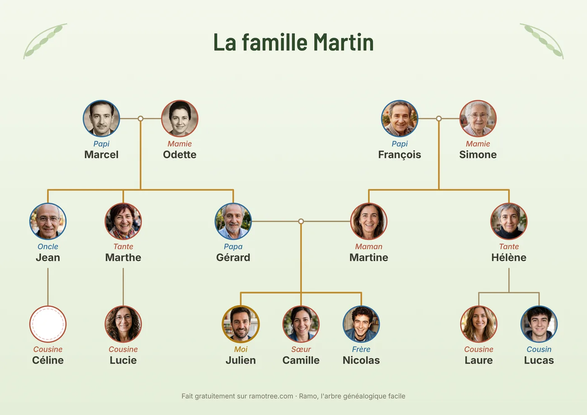

Comment faire un arbre généalogique, étape par étape
Faire l'arbre de votre famille est plus simple qu'il n'y paraît : commencez par ce que vous savez, interrogez les anciens tant que c'est possible et complétez-le petit à petit. Voici les étapes et un modèle gratuit à imprimer.
Envie de commencer tout de suite ? Créez votre arbre ici même : grands-parents, parents, oncles, cousins, frères et sœurs, avec photos si vous voulez, et téléchargez-le en PDF ou en image.

1. Commencez par vous
Notez votre nom, la date et le lieu de votre naissance. Puis vos parents et vos frères et sœurs, puis vos grands-parents. Écrivez tout ce que vous savez de mémoire, même incomplet : une date approximative (« vers 1930 ») vaut mieux qu'une case vide.
2. Interrogez la famille
Les anciens sont la meilleure source, et ce qu'on ne demande pas à temps se perd. Quelques questions qui marchent :
- Comment s'appelaient tes parents et tes grands-parents, avec leur nom de jeune fille ?
- Où et quand sont-ils nés ? Avec qui se sont-ils mariés, et où ?
- Combien de frères et sœurs avaient-ils ? Que sont-ils devenus ?
- Quel était leur métier ? Où vivaient-ils ?
- As-tu des photos, des lettres ou des souvenirs de cette époque ?
Apportez l'album photo : les visages aident à se souvenir. Photographiez les vieilles photos avec votre téléphone et, si on vous le permet, enregistrez la conversation.
3. Cherchez les informations qui manquent
À la maison, il y a souvent plus qu'on ne croit : le livret de famille, des actes de naissance ou de mariage, des faire-part et des photos annotées au dos. Ailleurs, l'état civil (naissances, mariages, décès), les registres paroissiaux pour les périodes plus anciennes, souvent numérisés par les archives départementales, et FamilySearch, gratuit, avec des millions d'actes anciens.
Notez d'où vient chaque information. Quand deux sources ne concordent pas, vous saurez à laquelle vous fier.
4. Organisez-le : sur papier ou sur le téléphone
Un arbre sur papier est parfait pour commencer. Mais l'arbre grandit vite (frères, oncles, cousins, conjoints…) et le papier devient trop petit. Avec Ramo, vous ajoutez chaque proche en touchant sa fiche et l'application place tout toute seule, avec les photos, les dates approximatives et le lien de parenté de chacun. Pas besoin de compte, et si vous avez déjà un arbre fait avec un autre logiciel, Ramo ouvre les fichiers GEDCOM.
5. Partagez-le avec la famille
Envoyez l'arbre en PDF au groupe de la famille : chacun peut compléter sa branche avec Ramo, gratuitement, et vous le renvoyer, et Ramo fusionne les versions sans doublons. Une fois complet, imprimez-le en grand ou offrez-le encadré.
Autres guides